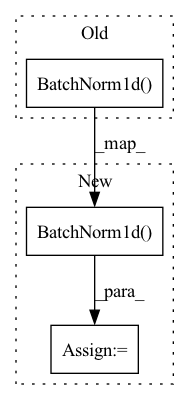

Pattern ID :1423
Before Change
nn.ReLU(),
nn.Dropout(0.5),
nn.Linear(bottleneck_dim, bottleneck_dim),
nn.BatchNorm1d( bottleneck_dim) ,
nn.ReLU(),
nn.Linear(bottleneck_dim, num_classes)
)After Change
nn.AdaptiveAvgPool2d(output_size=(1, 1)),
nn.Flatten()
)
self.head = nn.Sequential(
pool_layer,
nn.Dropout(0.5),
nn.Linear(in_features, bottleneck_dim),
nn.BatchNorm1d(bottleneck_dim),
nn.ReLU(),
nn.Dropout(0.5),
nn.Linear(bottleneck_dim, bottleneck_dim),
nn.BatchNorm1d( bottleneck_dim) ,
nn.ReLU(),
nn.Linear(bottleneck_dim, num_classes)
)In pattern: SUPERPATTERN
Frequency: 8
Non-data size: 3
Instances Fragment ID: 3830506
Project Name: thuml/transfer-learning-library
Commit Name: ac06563cc969a7128fe67f950eafea6c805ef10d
Time: 2021-07-26
Author: 13126830206@163.com
File Name: dalib/adaptation/mcd.py
M Class Name: ImageClassifierHead
N Class Name: ImageClassifierHead
M Method Name: __init__(5)
N Method Name: __init__(4)
M Parent Class: nn.Module
N Parent Class: nn.Module
M File Name: dalib/adaptation/mcd.py
N File Name: dalib/adaptation/mcd.py
M Start Line: 58
M End Line: 70
N Start Line: 55
N End Line: 74
Before Change
self.activation = activation
self.conv1 = nn.Conv1d(in_channels=input_features, out_channels=num_of_filters, kernel_size=kernel_size,
stride=stride, padding=padding)
self.batchnorm = nn.BatchNorm1d( num_of_filters, affine=False)
def forward(self, x: torch.Tensor) -> torch.Tensor:
x = self.conv1(x)
x = self.batchnorm(x)After Change
super(conv2d_bn, self).__init__()
self.conv = nn.Sequential(
nn.Conv1d(in_channels=in_channel, out_channels=filters, kernel_size=3, padding=padding),
nn.BatchNorm1d(num_features=filters)
)
if activation is None:
pass
else:
self.conv = nn.Sequential(self.conv, nn.ReLU())
def forward(self, x):
x = self.conv(x) Fragment ID: 3830504
Project Name: tvs-ai/pytorch_rppgs
Commit Name: d661a9c587676745f7ee0702c4a1dd2e1d4692f6
Time: 2022-12-29
Author: 57242033+najy97@users.noreply.github.com
File Name: vid2bp/nets/modules/MultiResUNet1D.py
M Class Name: Conv2d_batchnorm
N Class Name: conv2d_bn
M Method Name: __init__(9)
N Method Name: __init__(7)
M Parent Class: nn.Module
N Parent Class: nn.Module
M File Name: vid2bp/nets/modules/MultiResUNet1D.py
N File Name: vid2bp/nets/modules/MultiResUNet1D.py
M Start Line: 47
M End Line: 62
N Start Line: 6
N End Line: 18
Before Change
nn.BatchNorm1d(args.head_latent_size),
nn.ReLU(),
nn.Linear(args.head_latent_size, nce_logits_output_size),
nn.BatchNorm1d( nce_logits_output_size)
)
// The linear classifer head which we will stop-grad to
self.linear_classifier = nn.Linear(base_network_output_size, classifier_output_size)After Change
nn.ReLU(),
nn.Linear(args.head_latent_size, projection_output_size),
)
self.predictor = nn.Sequential(
nn.Linear(projection_output_size, args.head_latent_size),
nn.BatchNorm1d( args.head_latent_size) ,
nn.ReLU(),
nn.Linear(args.head_latent_size, projection_output_size),
) Fragment ID: 3830511
Project Name: jramapuram/byol
Commit Name: b4d91fe9fb09734e04af6b169b529217c5f566a4
Time: 2020-06-19
Author: jason.ramapuram@gmail.com
File Name: main.py
M Class Name: SimCLR
N Class Name: BYOL
M Method Name: __init__(6)
N Method Name: __init__(4)
M Parent Class: nn.Module
N Parent Class: nn.Module
M File Name: main.py
N File Name: main.py
M Start Line: 159
M End Line: 160
N Start Line: 171
N End Line: 210
Before Change
activation=activations.get(acts[0])))
if bn:
conv1.append(nn.BatchNorm1d( hids[0]) )
self.conv1 = Sequential(*conv1)
conv2 = nn.ModuleList()After Change
activation=activations.get(acts[0]))
if bn:
self.bn1 = nn.BatchNorm1d( hids[0])
else:
self.bn1 = lambda x : x
conv2 = nn.ModuleList() Fragment ID: 3830508
Project Name: edisonleeeee/greatx
Commit Name: 2485cc5800c0fa6cc8e8f7815bfb618c5755147b
Time: 2022-01-06
Author: cnljt@outlook.com
File Name: graphwar/defense/model_level/robust_gcn.py
M Class Name: RobustGCN
N Class Name: RobustGCN
M Method Name: __init__(9)
N Method Name: __init__(9)
M Parent Class: nn.Module
N Parent Class: nn.Module
M File Name: graphwar/defense/model_level/robust_gcn.py
N File Name: graphwar/defense/model_level/robust_gcn.py
M Start Line: 64
M End Line: 89
N Start Line: 64
N End Line: 93
Before Change
self.avgpool = nn.AdaptiveAvgPool2d((1, 1))
self.mlp = nn.Sequential(
nn.Linear(in_channels, hid_channels),
nn.BatchNorm1d( hid_channels, momentum=0.001, affine=False) ,
nn.ReLU(inplace=True), nn.Dropout(),
nn.Linear(hid_channels, out_channels), nn.ReLU(inplace=True))
After Change
dict(type="SyncBN", momentum=0.001, affine=False),
hid_channels)
else:
self.bn0 = nn.BatchNorm1d(
hid_channels, momentum=0.001, affine=False)
self.fc1 = nn.Linear(hid_channels, out_channels)
self.relu = nn.ReLU(inplace=True)
self.drop = nn.Dropout() Fragment ID: 3830515
Project Name: open-mmlab/openselfsup
Commit Name: 8f39b95109e75a22361ca8c39595d11fe5b46069
Time: 2020-07-06
Author: xiaohangzhan@outlook.com
File Name: openselfsup/models/necks.py
M Class Name: NonLinearNeckV0
N Class Name: NonLinearNeckV0
M Method Name: __init__(6)
N Method Name: __init__(5)
M Parent Class: nn.Module
N Parent Class: nn.Module
M File Name: openselfsup/models/necks.py
N File Name: openselfsup/models/necks.py
M Start Line: 64
M End Line: 68
N Start Line: 59
N End Line: 83
Before Change
groups=input_size,
bias=bias,
),
nn.BatchNorm1d( input_size) ,
activation(),
// pointwise
nn.Conv1d(After Change
bias=bias,
)
self.after_conv = nn.Sequential(
nn.BatchNorm1d( input_size) ,
activation(),
// pointwise
nn.Conv1d( Fragment ID: 3830513
Project Name: speechbrain/speechbrain
Commit Name: 3e563d2763cc69efd1454662053e6ee825603232
Time: 2021-05-11
Author: cornellsamuele@gmail.com
File Name: speechbrain/lobes/models/transformer/conformer.py
M Class Name: ConvolutionModule
N Class Name: ConvolutionModule
M Method Name: __init__(8)
N Method Name: __init__(6)
M Parent Class: nn.Module
N Parent Class: nn.Module
M File Name: speechbrain/lobes/models/transformer/conformer.py
N File Name: speechbrain/lobes/models/transformer/conformer.py
M Start Line: 50
M End Line: 73
N Start Line: 46
N End Line: 86